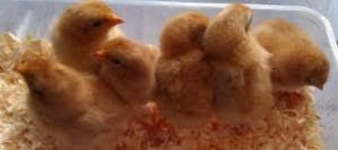

HATCHABILITY - THE MEASURE OF SUCCESS
The measure of success of any hatchery is the number of first-quality chicks produced. This number expressed as a percentage of all eggs set for incubation is normally termed hatchability. Hatchability is influenced by many factors. Some of these are the responsibility of the breeding farm and others are the responsibility of the hatchery. Mating activity is a good example of a factor entirely influenced on the farm. The hatchery cannot alter it, although many other factors can be influenced by both the farm and the hatchery.
HATCH OF FERTILE
Because hatcheries have no influence over fertility, it is important to consider the hatch of fertile in addition to hatchability. The hatch of fertile percent is a measurement of the efficiency of the hatchery machinery. Hatch of fertile takes into account the flock fertility as well as hatchability; it is percent hatch divided by percent fertile times 100.
The benefits of recording Hatch of Fertile are as follows:
- Separates fertility and hatchery problems
- Allows you to focus on the problem
- Expedites troubleshooting
HATCHING EGG MANAGEMENT
Optimum hatchability and chick quality can only be achieved when the egg is held under optimum conditions between laying and setting in the incubator. Remember that a fertile egg contains many living cells. Once the egg is laid, its hatching potential can at best be maintained, not improved. If mishandled, hatching potential will quickly deteriorate.
- Use of floor eggs depresses hatchability. They should be collected and packaged separately from nest eggs, and clearly identified. If they are to be incubated, they should be treated separately.
- Prevent hair-line cracks by handling eggs carefully at all times.
- Place hatching eggs carefully into the setter tray or transport tray, small (pointed) ends downward.
- Take care with egg grading. During the early production period check the weight of borderline sized eggs to select hatching eggs.
- Store the eggs in a separate room in which the temperature and humidity are controlled.
- Keep the farm egg handling room clean and tidy. Maintain good vermin control in your egg room. Refuse to accept dirty egg containers and buggies from the hatchery, and take care of them while on your premises.
Remove and discard eggs unsuitable for hatching. These are:
- Dirty
- Cracked
- Small (According to Hatchery Policy)
- Very large or double yolk
- Poor shells - but any shell color should be acceptable for hatching
- Grossly mis-shapen
Blood Stained egg
Cracked eggs
Elongated egg
Dirty Egg
Small eggs
Wrinkled eggs